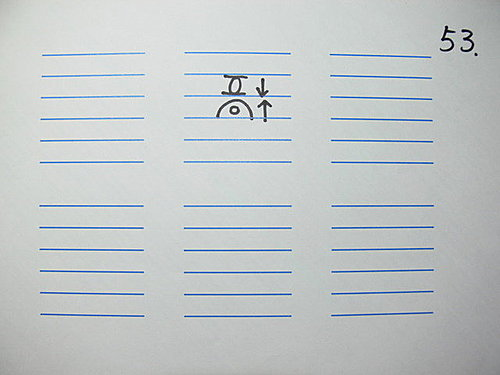

脈理醫理學 36.1：藥王脈學重要診斷結構‥‥‥五層脈病機（一）
作者：陳建元
藥王脈學中診脈時是分成五層脈來察覺體內病機的變化，但五層脈中的每一層，其實都代表著特殊的病機，叫作〝五層脈病機〞，五層脈病機歷代古書未曾講過，但卻是脈法中的一個不傳訣竅，學習28脈後必須再用五層脈病機來合參判斷，那脈診這條龍就能飛起來，翱翔入天了，如果不知道五層脈病機，單憑28脈是飛不起來的，理由何在？讓我們來看看學習28脈後在臨床上實際運用時會遇到什麼樣的難題？又為什麼說單單知道28脈的話，在臨床上是用不出來的，會心中了了，指下難明也是可以預料的事？
〈圖55〉是一張脈圖，請問這代表什麼？虛脈？是的，這是代表脾脈是虛脈，容易有消化不良，治療方法可以用補。
〈圖56〉，請問這代表什麼？滑大有力？是的，這是代表脾脈是滑大有力，容易有口臭和牙齦出血，治療方法可以用瀉。
那〈圖53〉這代表什麼呢？慘了，28脈中未曾說過一個虛脈之下又疊一個滑洪實脈是什麼意義？

〈圖54〉又是代表什麼呢？一個虛脈之下也是疊一個滑洪實脈，但這個滑洪實脈是鼓動無力的，這又是代表著什麼意義呢？
這個時候，五層脈病機就派上用場了，它能判斷出這是怎麼回事，從分佈在五層脈中混淆雜成一團的28脈中分析出真正的病機，五層脈病機是配何在28脈之後來使用的，使用的方法是用28脈畫出脈圖後，然後再用五層脈病機參合來做判斷。
〈圖51〉是自然界的生態現象，歸納起來主要有燥濕兩種型態，第3層代表的是土地，一切都依附在地面之上，火上炎而濕就下，分出第2層和第4層，第1層則代表自然界更上面的蒼天，第5層代表自然界更下面的黃泉，第0層和第6層則代表不在太極管轄內的太極之外。
〈圖52〉則是藥王脈學五層脈所代表的基本病機：

第0層代表的病機是：真氣外泄。
第1層代表的病機是：1. 滑數是風熱。 2. 有力而緊是風寒。 3. 細澀是風寒剛開始或剛結束的餘邪。 4. 無力為虛。
第2層代表的病機是：1. 少陽證所顯示的地方。 2.某些以毒為主的疾病所顯示的地方。 3. 陰虛或燥顯示的地方。 4. 風寒深入後，脈象會顯示在這邊。
第3層代表的病機是：陽明火位。意思是人的元氣充不充足要兼看這邊，萬物以土為主，不管是那一層脈，只要同時搭配陽明火位是有力的話，代表人的元氣充足，正邪必然要大戰一場，所以雖然某層脈是偏虛的，但如果陽明火位是實而有力的，合起來看後，還是要當成實脈來看待，治以攻法〈同圖53〉。相反的，若陽明火位是無力的話，則某層的虛脈才能當成真正的虛脈來看，治以補法〈同圖54〉。
第4層代表的病機是：1. 無力是虛，但是偏寒。 2. 濕位和痰位。 3. 氣滯位和血瘀位。
第5層代表的病機是：1. 寒位。 2. 氣滯血瘀位，但比第4層更深。
第6層代表的病機是：1. 伏脈位。 2. 氣機閉塞。
五層脈每一層的基本意義要記起來，記得時候可對照〈圖51〉來記，這樣會比較容易記，這些病機排列的位置，和自然界生態的排列位置，有很多雷同之處。
【引用請先來信告知徵求同意，若有涉及販售營利等商業行為，版權所有拷貝盜用必究。】
【藥王脈學講壇】http://blog.xuite.net/drjychen/twblog